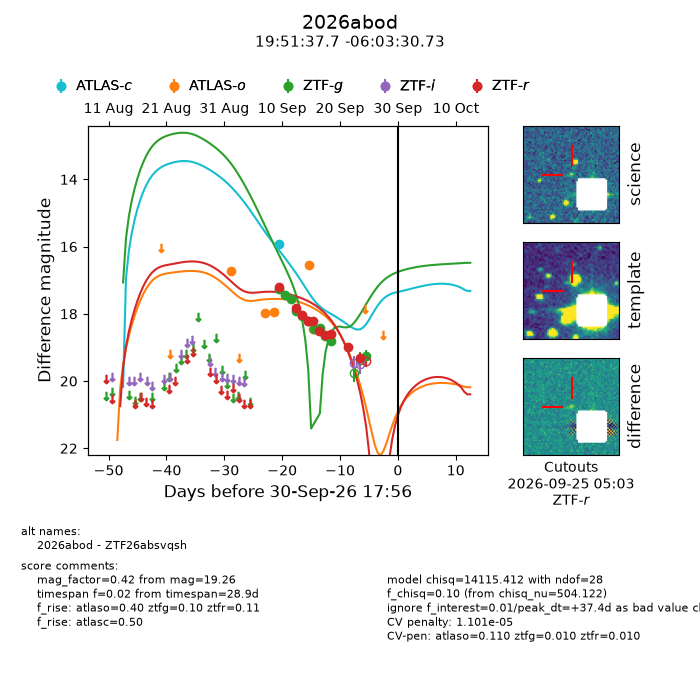
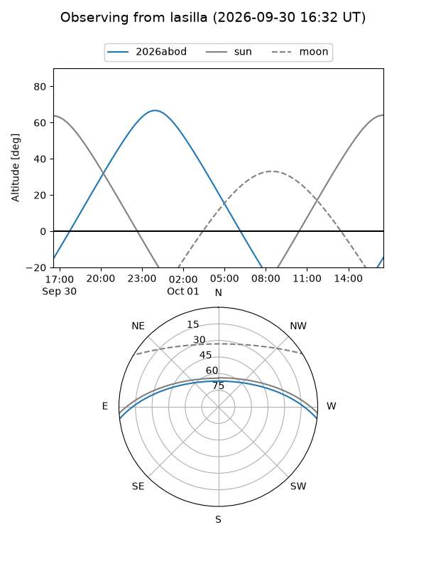
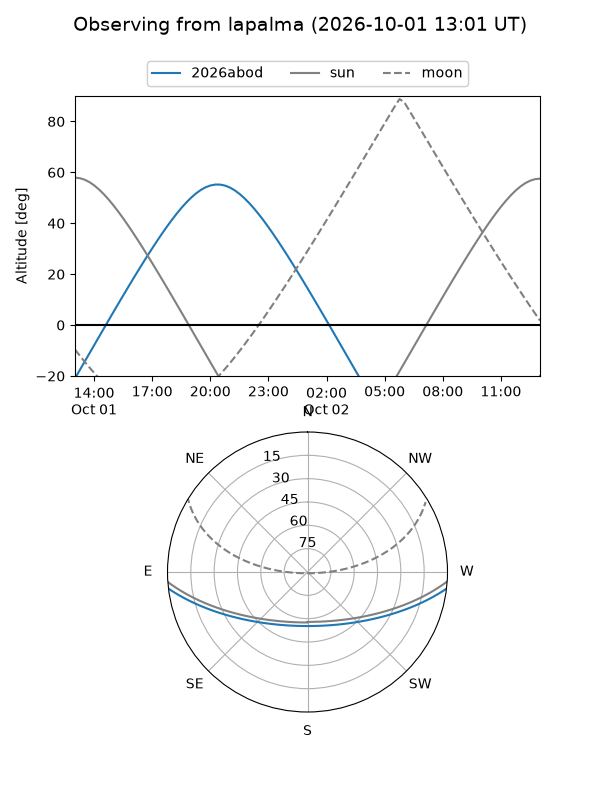
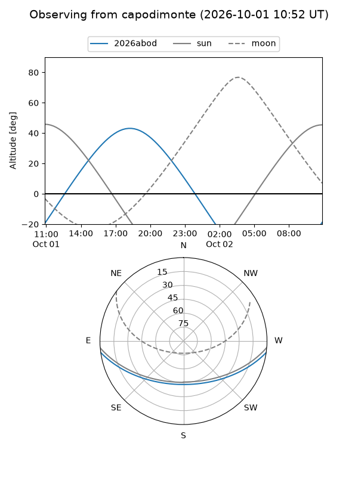
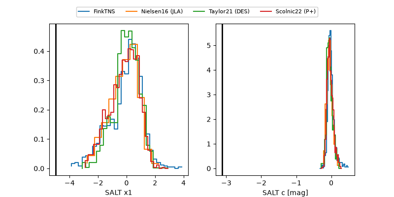

2026abod
Target 2026abod at 2026-10-01 05:58
Aliases and brokers:
FINK-ZTF: ztf.fink-portal.org/ZTF26absvqsh
Lasair-ZTF: lasair-ztf.lsst.ac.uk/objects/ZTF26absvqsh
ALeRCE-ZTF: alerce.online/object/ZTF26absvqsh
YSE-PZ: ziggy.ucolick.org/yse/transient_detail/2026abod
TNS name: wis-tns.org/object/2026abod
Direct TNS query: direct search
alt names
ZTF26absvqsh (ztf,fink_ztf)
2026abod (tns,yse)
Coordinates:
equatorial (ra, dec) = 297.9070,-6.05854
equatorial (HMS+DMS) = 19:51:37.67,-06:03:30.73
galactic (l, b) = (34.3509,-16.13456)
Flags:
TNS type: nan
peak dt: +37.9
likely cv: !!
Photometry:
last atlasc=15.91, atlaso=18.64, ztfg=19.26, ztfr=19.31
1 atlasc, 6 atlaso, 11 ztfg, 10 ztfr detections
Lightcurve

Visibility



Additional plots
